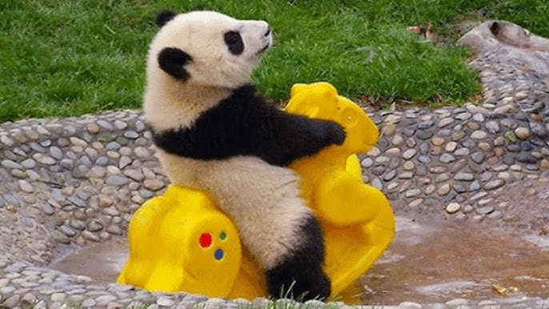

I nostri amici animali
1. Il gattino curioso 🐱

Un piccolo gatto pronto a giocare in giardino.
Questo gattino ha uno sguardo dolcissimo che scioglie il cuore. Passa le sue giornate a rincorrere farfalle e a fare le fusa sul divano.
2. Il panda dormiglione 🐼

Un cucciolo di panda mentre fa merenda.
Non c'è niente di più tenero di un panda che si rilassa. Sono animali molto pacifici e passano quasi tutto il tempo a mangiare e dormire.
Curiosità divertenti:
- I gatti possono fare più di 100 suoni vocali diversi
- I panda giganti mangiano fino a 12 ore al giorno
- Guardare foto di animali carini riduce lo stress!